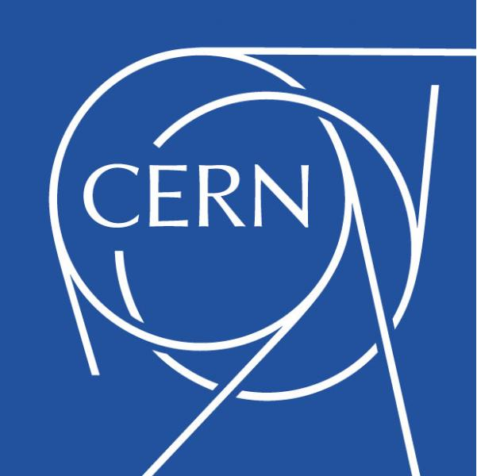

World Wide Web Consortium (W3C)
World Wide Web Consortium, is a globally recognized standards organization founded in 1994 with a mission to shape and maintain the fundamental standards that power the World Wide Web. At the heart of its work is the development and promotion of technical specifications and guidelines that ensure the web's growth, accessibility, and compatibility. W3C's influence extends across various domains, including web design, accessibility, security, and internationalization. It is responsible for producing vital web standards such as HTML, CSS, and JavaScript specifications, which serve as the foundation for web development.
Citation: Berners-Lee, T.(2023). World Wide Web Consortium (W3C). Retrieved from URL: https://www.w3.org/
The Linux Kernel Archives
The Linux Kernel Archives is the official repository and resource hub for the Linux kernel, the core component of the Linux Operating System. It serves as the central hub for Linux kernel development, distribution, and information. Maintained by the Linux community and overseen by Linus Torvalds, the creator of Linux, this website provides access to the latest kernel releases, source code, documentation, and development tools. It's a vital resource for developers, system administrators, and users of Linux-based systems, offering a comprehensive and up-to-date reference for everything related to the Linux kernel.
Citation: Torvalds, L. (2020). Linux Kernel Archives. Retrieved from URL: //www.kernel.org/
The Large Hadron Collider (LHC)
The Large Hadron Collider stands as a pinnacle of scientific engineering and inquiry. Situated at CERN, the European Organization for Nuclear Research, near Geneva, Switzerland, it holds the distinction of being the world's largest and most powerful particle accelerator. The LHC is a colossal underground ring, spanning approximately 17 miles in circumference, designed with the ambitious purpose of exploring some of the most profound and enigmatic questions in particle physics. The LHC is a testament to international collaboration, involving scientists, engineers, and institutions from across the globe. It hosts multiple experiments, including ATLAS and CMS, which employ intricate detector systems to capture and analyze the myriad particles produced during collisions.
Citation: CERN. (2021). The Large Hadron Collider. Retrieved from URL: https://home.cern/science/accelerators/large-hadron-collider
EduTech Futures
EduTech Futures is a forward-thinking organization deeply committed to reshaping the landscape of education through the power of technology. With an unwavering dedication to innovation, their projects represent a visionary approach to transforming traditional educational methods. At the core of their initiatives is the development of cutting-edge interactive learning platforms, which provide students with engaging and immersive educational experiences. These platforms leverage state-of-the-art technology to create dynamic, personalized learning environments that cater to individual needs and preferences.
Citation: Source: EduTech Futures Research Brief, EduTech Journal, Volume 8, Issue 2, 2022. Retrieved from URL: https://www.edutechfuture.com/